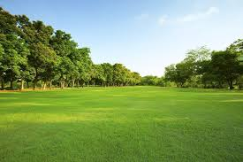

Nigeria is bordered to the north by Niger to the east by Chad and Cameroon,
to the south by the Gulf of Guinea of the Atlantic ocean and to the west by Benin.
Nigeria is not only large in area—larger than the Us State of Texas—but also Africa most populous country.
In general, the topography of Nigeria consists of plains in the north and south interrupted
by plateaus and hills in the centre of the country. The Sokoto Plains lie in
the northwestern corner of the country, while the Borno Plains in the northeastern corner extend
as far as the Lake Chad basin. The Lake chad basin and the coastal areas,
including the Niger River delta and the western parts of the Sokoto region in the
far northwest, are underlain by soft, geologically young sedimentary rocks. Gently undulating plains, which become
waterlogged during the rainy season, are found in these areas. The characteristic landforms of the
plateaus are high plains with broad, shallow valleys dotted with numerous hills or isolated mountains,
called inselbergs; the underlying rocks are crystalline, although sandstones appear in river areas. The Jos-Plateau
rises almost in the centre of the country; it consists of extensive lava surfaces dotted with numerous extinct volcanoes. Other eroded surfaces, such
as the Udi-Nsukka escarpment (see Udi-Nsukka), rise abruptly above the plains at elevations
of at least 1,000 feet (300 metres). The most mountainous area is along the southeastern
border with Cameroon, where the Cameroon Highlands rise to the highest points in the country,
Chappal Waddi (7,936 feet [2,419 metres]) in the Gotel Mountains and Mount Dimlang (6,699 feet [2,042 metres])
in the Shebshi-Mountains
The major drainage areas in Nigeria are the Niger-Benue basin, the Lake Chad basin,
and the Gulf of Guinea basin. The Niger-River, for which the country is named,
and the Benue,its largest tributary, are the principal rivers. The Niger has many rapids
and waterfalls, but the Benue is not interrupted by either and is navigable throughout its
length, except during the dry season. Rivers draining the area north of the Niger-Benue
trough include the Sokoto, the Kaduna, the Gongola, and the rivers draining into Lake-Chad.
The coastal areas are drained by short rivers that flow into the Gulf of Guinea.
River basin development projects have created many large man-made lakes, including Lake Kainji on
the Niger and Lake Bakolori on the Rima River.
The Niger delta is a vast low-lying region through which the waters of the Niger
River drain into the Gulf of Guinea. Characteristic landforms in this region include oxbow-lake,
river meander belts (see mendears), and prominent levees. Large freshwater swamps give way to brackish
mangrove thickets near the seacoast.
Soils in Nigeria, and in Africa generally, are usually of a poorer quality than those
in other regions of the world. However, over the centuries Nigerians have utilized agricultural techniques
such as slash and burn, intercropping, and the use of shallow planting implements to cope
with the shortcomings of the soil. In the precolonial period the country normally produced enough
agricultural commodities to feed its population, and it even maintained a surplus for export.
Nigeria’s major soil zones conform to geographic location. Loose sandy soils consisting of wind-borne deposits
and riverine sands are found in the northern regions, although, in areas where there
is a marked dry season, a dense surface layer of laterite develops, making these soils
difficult to cultivate. The soils in the northern states of Kano and Sokoto, however, are
not subject to leaching and are therefore easily farmed. South of Kano the mixed soils
contain locally derived granite and loess (wind-borne deposits). The middle two-thirds of the
country, the savanna regions, contain reddish, laterite soils; they are somewhat less fertile than those of
the north because they are not subject to as much seasonal drying, nor do they
receive the greater rainfall that occurs in the more southerly regions. The forest soils represent
the third zone. There the vegetation provides humus and protects it from erosion by heavy
rainfall. Although these soils can readily be leached and lose their fertility, they are the
most productive agriculturally. Hydromorphic and organic soils, confined largely to areas underlain by
sedimentary rocks along the coast and river floodplains, are the youngest soil types.
Nigeria has a tropical climate with variable rainy and dry seasons, depending on location. It is
hot and wet most of the year in the southeast but dry in the
southwest and farther inland. A savanna climate,with marked wet and dry seasons, prevails
in the north and west, while a steppe climate with little precipitation is found in
the far north.
In general, the length of the rainy season decreases from south to north. In the
south the rainy season lasts from March to November, whereas in the far north it
lasts only from mid-May to September. A marked interruption in the rains occurs during August
in the south, resulting in a short dry season often referred to as the “August
break.” Precipitation is heavier in the south, especially in the southeast, which receives more than
120 inches (3,000 mm) of rain a year, compared with about 70 inches (1,800 mm) in the
southwest. Rainfall decreases progressively away from the coast; the far north receives no more than
20 inches (500 mm) a year.
Temperature and humidity remain relatively constant throughout the year in the south, while the seasons
vary considerably in the north; during the northern dry season the daily temperature range becomes
great as well. On the coast the mean monthly maximum temperatures are steady throughout the
year, remaining about 90 °F (32 °C) at lagos and about 91 °F (33 °C) at Port-Harcourt; the mean
monthly minimum temperatures are approximately 72 °F (22 °C) for Lagos and 68 °F (20 °C) for Port Harcourt.
In general, mean maximum temperatures are higher in the north, while mean minimum temperatures are
lower. In the northeastern city of Maiduguri, for example, the mean monthly maximum temperature may
exceed 100 °F (38 °C) during the hot months of April and May, while in the same
season frosts may occur at night. The humidity generally is high in the north, but
it falls during the harmattan (the hot, dry northeast trade wind), which blows for more
than three months in the north but rarely for more than two weeks along the coast.
Camels, antelopes, hyenas, lions, baboons, and giraffes once inhabited the entire savanna region, and red
river hogs, forest elephants, and chimpanzees lived in the rainforest belt. Animals found in both
forest and savanna included leopards, golden cats, monkeys, gorillas, and wild pigs. Today these animals
can be found only in such protected places as the Yankari National Park in Bauchi
state, Gashaka Gumti National Park in Taraba state, Kainji Lake National Park in Kwara state
(see Kainji Lake), and Cross River National Park in Cross River state. Rodents such as
squirrels, porcupines, and cane rats constitute the largest family of mammals. The northern savanna abounds
in guinea-fowlguinea fowl. Other common birds include quail, vultures, kites, bustards, and gray parrots. The
rivers contain crocodiles, hippopotamuses, and a great variety offishes.